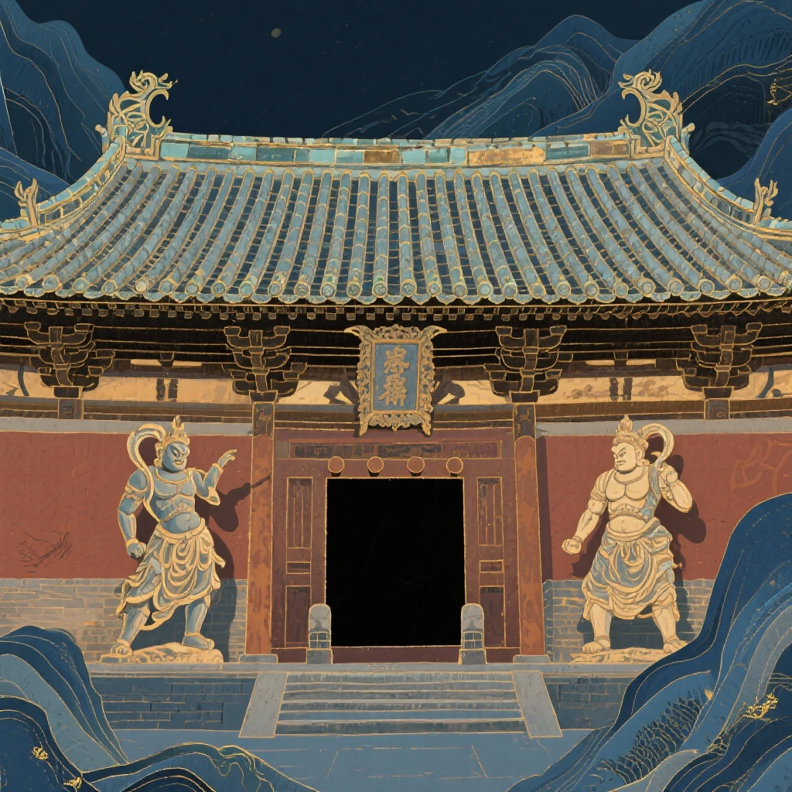
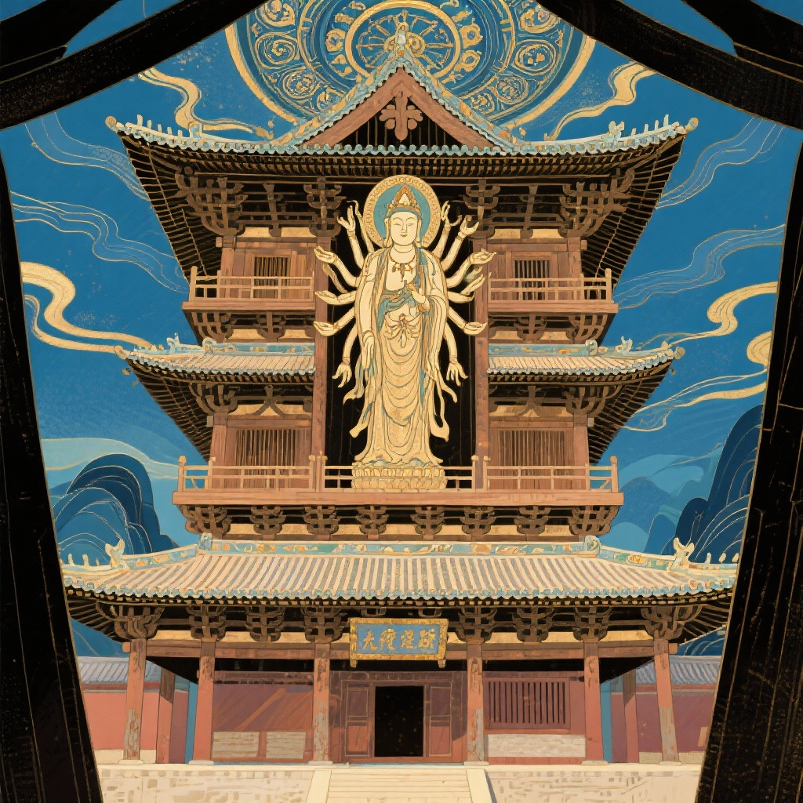
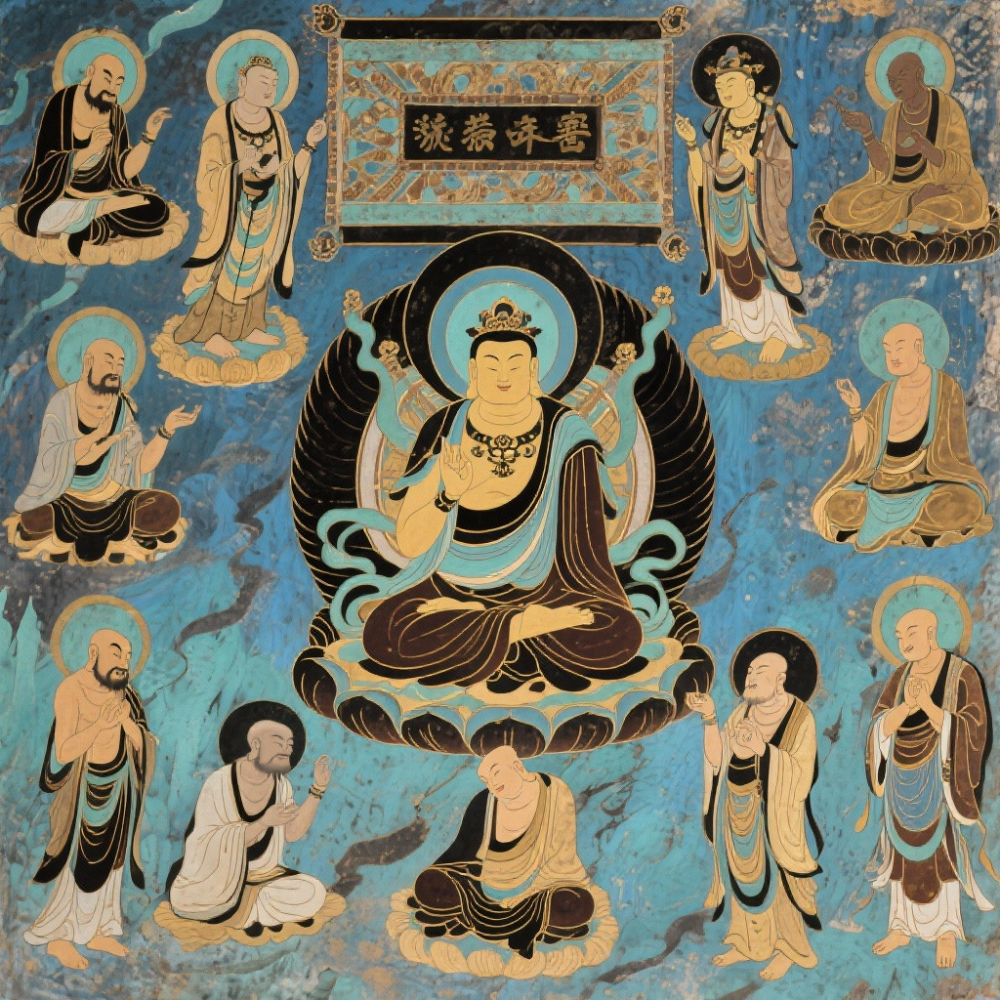

独乐寺
千年古刹，始建于唐，重建于辽。以观音阁、山门、壁画"三绝"闻名， 是中国现存最古老的木结构楼阁式建筑，被誉为"无上国宝"。
建筑三绝

山门建筑特色
建筑结构：山门高10米，面阔三间，进深两间，采用庑殿顶结构，是中国现存最早的庑殿顶山门实例。
历史价值：正脊两端的鸱吻是中国保存在建筑屋顶原位置上年代最早的实例，展现了辽代建筑的典型特征。
艺术特色：门前两尊辽代彩色泥塑金刚力士像，肌肉虬结，衣带烈烈，体现了辽代雕塑艺术的精湛技艺。
文化内涵：山门匾额"独乐寺"三字相传为明代严嵩所题，蕴含着深厚的历史文化底蕴。
观音阁建筑奇迹
建筑结构：观音阁外观两层，内有三层，通高23米，是中国现存最古老的木结构楼阁式建筑。
抗震设计：采用刚柔相济的结构设计，刚性的斗栱层与柔性的立柱层相结合，历经28次地震而不倒。
内部造像：阁内供奉16米高的十一面观音塑像，是中国现存最大的泥塑站像之一，展现了辽代雕塑艺术的高峰。
建筑智慧：整个结构围绕中间的观音像建造，28根立柱形成内外两圈有序排列，体现了古代建筑师的卓越智慧。


壁画艺术价值
历史价值：壁画总面积142.85平方米，以十六罗汉和明王为主题，是元代壁画艺术的珍贵遗存。
艺术特色：壁画风格具有元代特色，明代重描，线条流畅，色彩鲜明，在国内堪称一流。
文化内涵：壁画中穿插佛教和世俗题材故事，展现了当时社会文化的丰富内涵。
保护意义：1972年维修时首次揭露，为研究中国古代壁画艺术提供了重要的实物资料。
千年历史沿革
唐贞观十年 (636年)
独乐寺始建，最初名为"独乐寺"，取"思独乐而不与民同乐"之意。
辽统和二年 (984年)
重建山门和观音阁，形成了我们今天所见的建筑群主体，至今已1040年。
明代
山门内壁绘制四大天王壁画，形成了现在我们所见的壁画艺术。
清代
乾隆年间增建行宫，成为皇帝东陵谒陵途中的休憩之所。
1932年
梁思成先生发现并研究独乐寺，发表《蓟县独乐寺观音阁山门考》。
1961年
独乐寺被列为首批全国重点文物保护单位，得到国家级的保护。
建筑结构解析
斗栱结构
抗震原理
刚柔相济
刚性的斗栱层与柔性的立柱层相结合，使整体结构既有足够的刚性以防风，又有足够的柔性能抗震。
分层设计
多层斗栱结构形成独立的承重体系，即使部分结构受损，整体建筑仍能保持稳定。
木榫结构
采用传统的木榫连接方式，具有一定的弹性和变形能力，能够有效吸收地震能量。